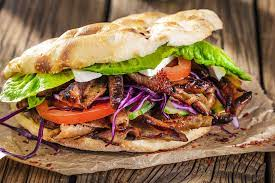

Best Turkish Kebap in the City

Ingredients
- 1 pound ground meat (beef, lamb, or a combination)
- 1 small onion, finely chopped
- 2 cloves of garlic, minced
- 2 tablespoons fresh parsley, chopped
- 1 teaspoon ground cumin
- 1 teaspoon ground coriande
- 1/2 teaspoon paprika
- Skewers (wooden or metal)
Preparation
- Soak wooden skewers in water at least 30 minutes to prevent them from burning.
- In a large bowl, combine the ground meat, chopped onion, minced garlic, parsley, cumin, coriander, paprika, salt, and pepper.
- Use your hands to mix all the ingredients together until well combined.
- Divide the meat mixture into small portions and shape them into long, sausage-like cylinders.
- Thread the meat cylinders onto the skewers, pressing and shaping them gently with your hands to ensure they stick together.
- Preheat your grill or grill pan over medium-high heat.
- Place the kebabs on the grill and cook for about 4-5 minutes per side, or until they are browned and cooked through.
- Turn the kebabs occasionally to ensure even cooking.
- Once cooked, remove the kebabs from the grill and let them rest for a few minutes before serving.
- Serve the kebabs hot with your choice of accompaniments such as pita bread, tzatziki sauce, hummus, grilled vegetables, or a fresh salad.
Go To Home